Yes, these robots are incredibly playful and can sometimes argue
with each other, but when it comes to keeping an eye on a large
number of bugs at the same time, they are indispensable.

400$
robots takie to

300$
tut nazvanie krutoe
These robots are unique in that they can fix each other, and if
this fails, they send a notification to the owner with their
geolocation and inform them that they need help.

200$
robots sakie to
This bug is distinguished by its size and flying skills. since he
has wings, he can observe the whole situation from above and, if
necessary, crawl through the smallest holes.

300$
lalalalala
These are twin beetles, due to their double strength, they are
able to turn over a beetle of any weight, as well as remove an
obstacle in front of it or a twig that crushed the beetle.

You can see our veb poster here
Another poster here
500$
heheheheheheheheehhehe
This type of robotic beetle is able to move through the water.
They do not fly, but they are endowed with the abilities of a
water strider. due to their low weight, they are able to run
through reservoirs.